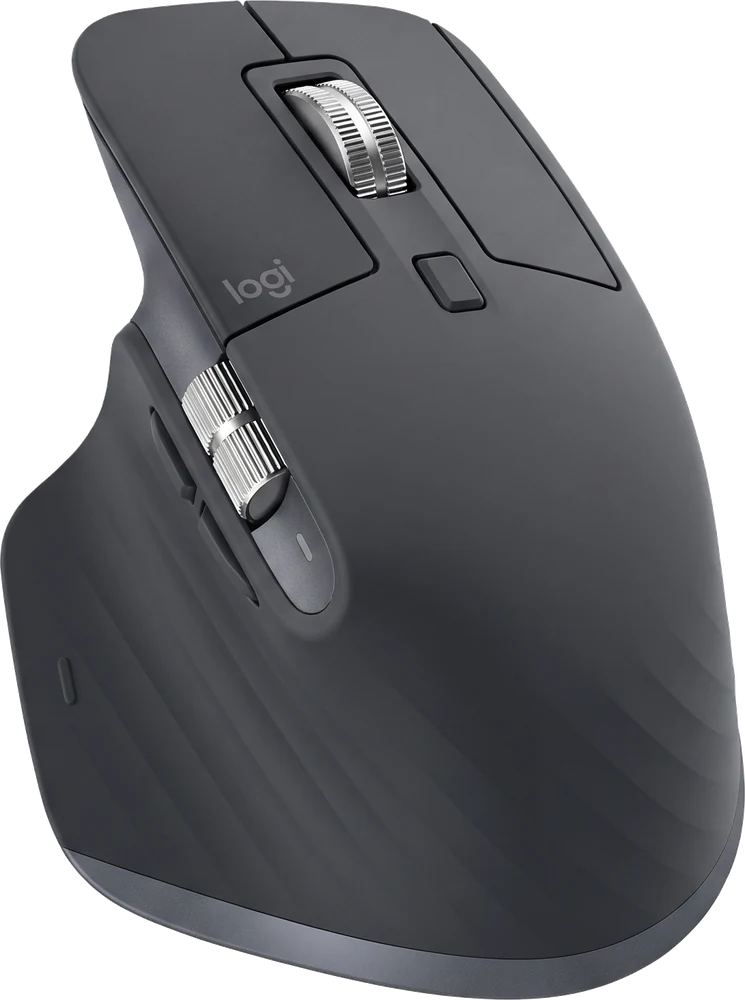
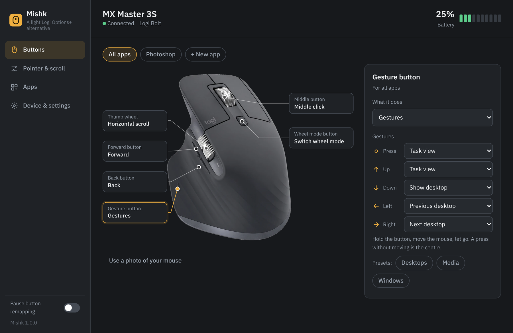
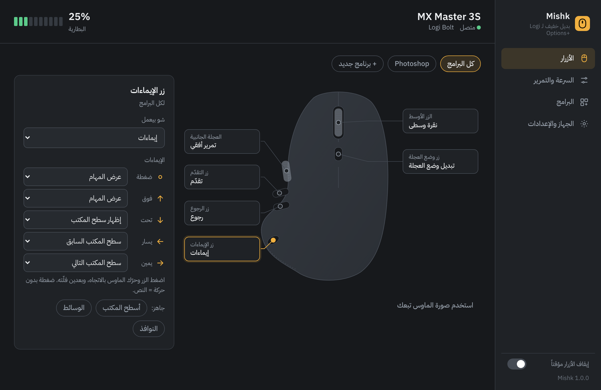
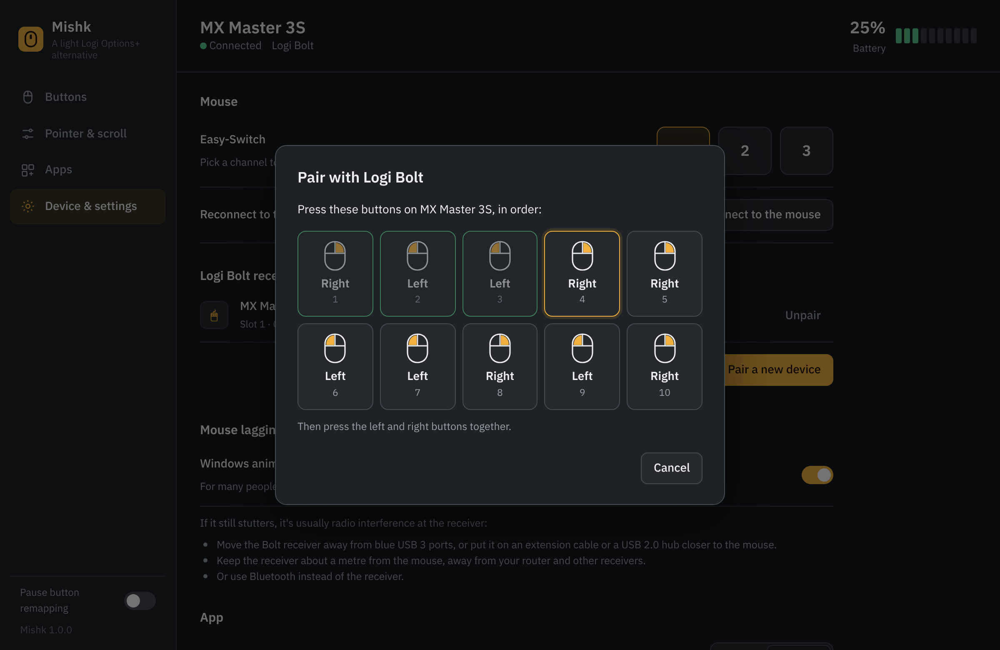
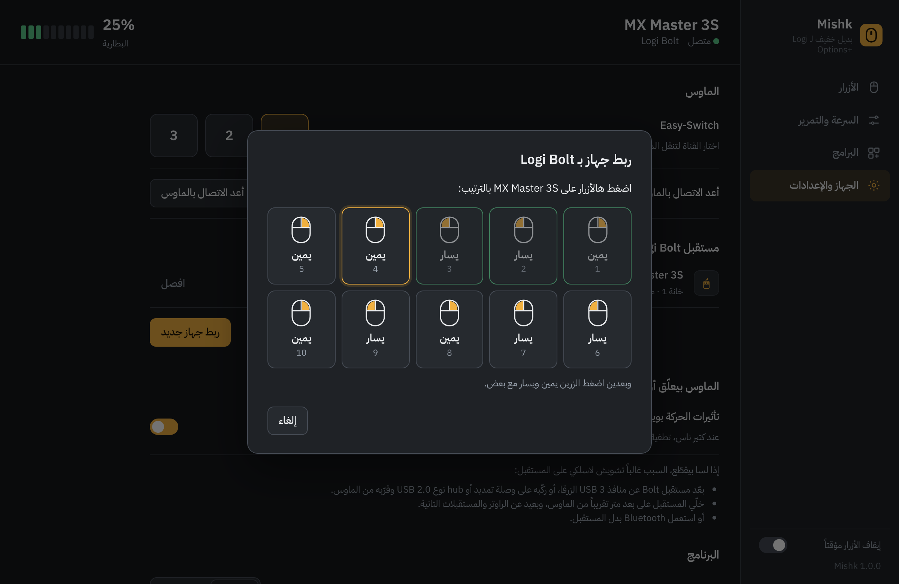
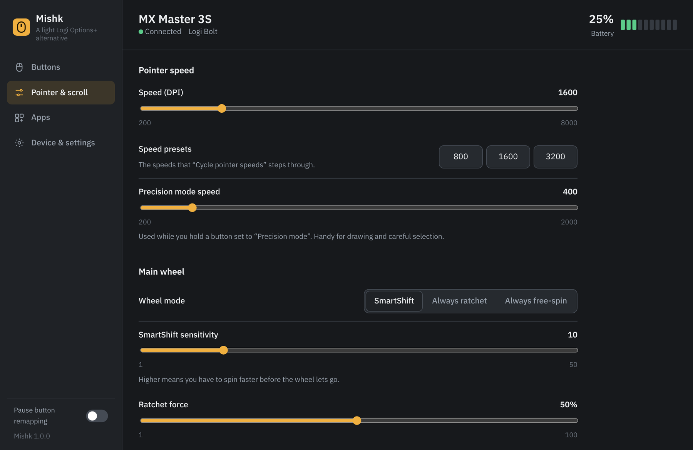
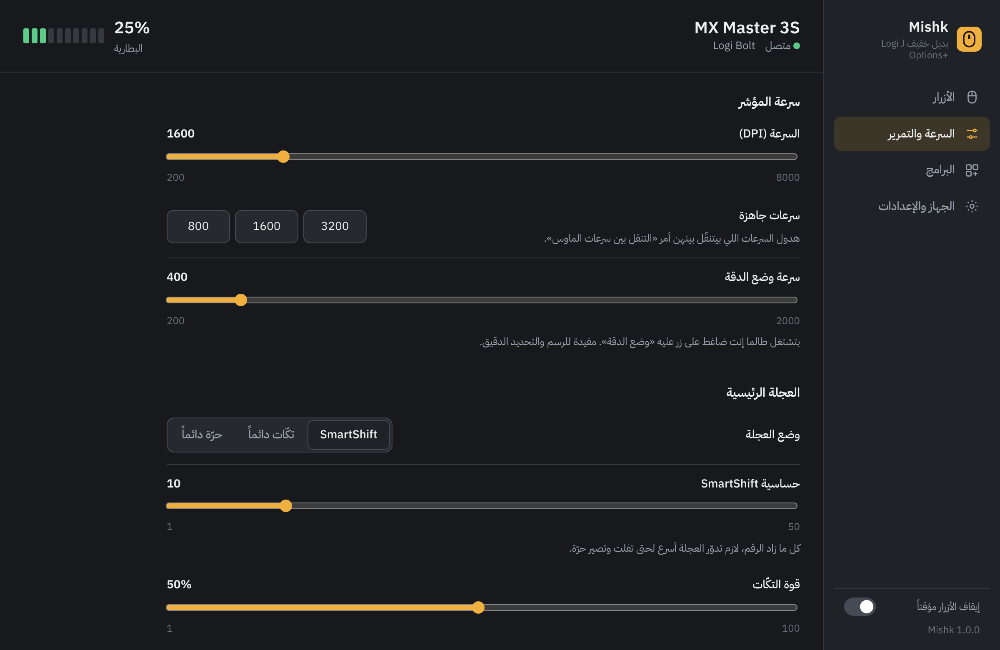

Mishk is a free, tiny Windows app that remaps your Logitech MX Master's buttons, gestures and thumb wheel, and the side buttons of almost any other mouse. One 3.7 MB file. No account, no cloud, no crashes. Mishk برنامج مجاني وصغير لويندوز، بيغيّر وظيفة أزرار ماوس لوجيتك MX Master، والإيماءات، والعجلة الجانبية، وكمان الأزرار الجانبية لأغلب الماوسات التانية. ملف واحد 3.7MB، بدون حساب، بدون إنترنت، وبدون تعليق.
Windows 10 and 11 · Free and open source (MIT)ويندوز 10 و11 · مجاني ومفتوح المصدر (MIT)

Options+ is heavy, crashes, and sometimes vanishes from the tray, taking your button settings with it. Mishk was built to just work.برنامج Options+ تقيل، وبيعلّق، وأحياناً بيختفي من الـ tray وبتروح معه إعدادات الأزرار. Mishk انعمل ليشتغل وبس.
No installer, no background services, no account. It opens instantly and frees its memory when you close the window.بدون تنصيب، بدون خدمات بالخلفية، وبدون حساب. بيفتح فوراً، وبيفضّي الذاكرة لما تسكّر النافذة.
Your MX Master reports its buttons straight to Mishk over Logitech's own HID++ protocol, so Windows can't silently drop them.ماوس MX Master بيبعت ضغطات الأزرار مباشرة لـ Mishk ببروتوكول لوجيتك نفسه، فويندوز ما بيقدر يوقفها.
English and Arabic, with a proper right-to-left layout. Dark and light themes.إنجليزي وعربي، والعربي مرتّب من اليمين لليسار. وفي مظهر غامق وفاتح.
And a few things it never did.وكم شغلة ما كان يعملها أبداً.
Over 60 actions, keyboard shortcuts, mouse clicks, or open any app or link.أكتر من 60 أمر، اختصارات كيبورد، نقرات ماوس، أو فتح أي برنامج أو رابط.
Hold the gesture button and swipe up, down, left or right. Five actions on one button.اضغط زر الإيماءات واسحب لفوق أو تحت أو يمين أو يسار. خمس أوامر على زر واحد.
Photoshop, Premiere, Figma, Chrome… each gets its own buttons, switched automatically.فوتوشوب، بريمير، فيغما، كروم… كل برنامج إله أزراره، وبتتبدّل لحالها.
Keys stay held while you hold the button, like Space for the Hand tool. Options+ can't.الاختصار بيضل مضغوط طالما إنت ضاغط الزر، متل Space للـ Hand tool. Options+ ما بيعملها.
Hold a button to slow the pointer for careful work, let go to return to normal speed.اضغط زر ليبطّئ المؤشر للشغل الدقيق، وفلته لترجع السرعة.
Zoom, brush size, volume, tabs, undo/redo or timeline frames, per app.زوم، حجم الفرشاة، الصوت، التبويبات، تراجع وإعادة، أو فريمات التايملاين، لكل برنامج.
Pointer speed with presets, SmartShift sensitivity, ratchet force, smooth and reversed scrolling.سرعة المؤشر مع سرعات جاهزة، حساسية SmartShift، قوة التكّات، وتمرير ناعم أو معكوس.
First-time pairing with Bolt and Unifying receivers, no Logitech app needed.ربط لأول مرة مع مستقبلات Bolt وUnifying، بدون أي برنامج من لوجيتك.
Battery in the tray, a low battery alert, and switching computers from the app.البطارية بالـ tray، تنبيه لما تضعف، وتنقل الماوس بين الأجهزة من البرنامج.
When the mouse wakes up or reconnects, Mishk puts your settings back by itself.لما يصحى الماوس أو يرجع يتصل، Mishk بيرجّع إعداداتك لحاله.






Built around the MX Master 3S, and useful with almost any mouse.معمول على أساس MX Master 3S، ومفيد مع أغلب الماوسات.
| Mouseالماوس | What Mishk can doشو بيعمل Mishk |
|---|---|
| MX Master 3S, MX Master 3 | ● Everything: all buttons, gestures, thumb wheel, DPI, SmartShift, battery, Easy-Switch, pairingكل شي: كل الأزرار، الإيماءات، العجلة الجانبية، السرعة، SmartShift، البطارية، Easy-Switch، والربط |
| MX Master 4, MX Master 2S | ● Buttons (the MX Master 4 sense panel works as the gesture button), DPI, SmartShift, batteryالأزرار (لوحة اللمس بـ MX Master 4 بتشتغل كزر إيماءات)، السرعة، SmartShift، البطارية |
| MX Anywhere 3S / 3, MX Vertical, other Logitech HID++ mice | ● The buttons each mouse has (including the MX Vertical DPI button), DPI, battery, pairingالأزرار الموجودة بكل ماوس (مع زر السرعة بـ MX Vertical)، السرعة، البطارية، والربط |
| Any other mouse, any brandأي ماوس تاني، من أي شركة | ● Back, forward and middle buttons (with gestures and per-app profiles), Windows pointer speed, acceleration and scroll linesأزرار الرجوع والتقدّم والزر الأوسط (مع الإيماءات وإعدادات لكل برنامج)، وسرعة المؤشر بويندوز، والتسارع، وعدد أسطر التمرير |
That warning shows for any app that isn't code-signed yet. Click More info, then Run anyway. The full source code is on GitHub for anyone to read and build.هالتحذير بيطلع لأي برنامج لسا مش موقّع. اضغط More info وبعدين Run anyway. الكود كامل على GitHub لأي حدا يقرأه ويبنيه.
Partly. Mishk has a one-click switch for Windows animation effects, which stops stutter for many people on Windows 11. Most other lag is radio interference: move the Bolt receiver away from blue USB 3 ports, put it on an extension cable or USB 2.0 hub closer to the mouse, or use Bluetooth. No app can fix interference by itself.جزئياً. Mishk فيه زر بيطفي تأثيرات الحركة بويندوز، وهاد بيوقف التقطيع عند كتير ناس على ويندوز 11. أغلب التعليق التاني سببه تشويش لاسلكي: بعّد مستقبل Bolt عن منافذ USB 3 الزرقا، أو ركّبه على وصلة تمديد أو hub نوع USB 2.0 قريب من الماوس، أو استعمل Bluetooth. ما في برنامج بيقدر يصلّح التشويش لحاله.
Not yet, Mishk is Windows only. On Linux, Solaar is excellent.لسا لأ، Mishk بس لويندوز. على لينكس في برنامج Solaar وهو ممتاز.
If that app runs as Administrator, Windows blocks shortcuts from normal apps. Run Mishk as Administrator too.إذا البرنامج شغّال كـ Administrator، ويندوز بيمنع الاختصارات من البرامج العادية. شغّل Mishk كمان كـ Administrator.
Open Device & settings → Show log in Mishk and attach it to a GitHub issue, with your mouse model. That's exactly what's needed to add support.افتح الجهاز والإعدادات ← اعرض السجل جوّا Mishk، وحطّه بـ Issue على GitHub مع اسم الماوس. هاد بالزبط اللي بنحتاجه لنضيف الدعم.